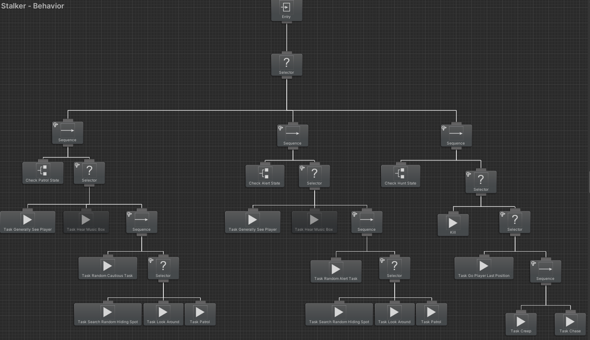

public class Director : MonoBehaviour
{
// Declaring and Initializing variables
public GameObject player; // Reference to the player
public GameObject stalker; // Reference to the stalker
public List<GameObject> defAreaWaypoints; // List of the default waypoints that the stalker will follow
// Called when the script is instantiated
private void Start()
{
// Starts the enemy on the default path
stalker.GetComponent<StalkerEnemy>().waypoints = defAreaWaypoints;
Debug.Log("defArea: " + defAreaWaypoints[0]);
Debug.Log("Enemy Waypoints" + stalker.GetComponent<StalkerEnemy>().waypoints[0]);
// Starts the hint routine
StartCoroutine(GiveHintRoutine());
}
// Coroutine for given the stalker a hint
private IEnumerator GiveHintRoutine()
{
// Defines the amount of time between coroutine execution
WaitForSeconds waitTime = new WaitForSeconds(15f);
// Continuously runs the hint given function
while (true)
{
yield return waitTime;
GiveHint();
}
}
// Function that gives hint to the enemy
private void GiveHint()
{
stalker.GetComponent<StalkerEnemy>().waypoints = player.GetComponent<PlayerAreaTracker>().areaEntered.transform.parent.GetComponent<CollisionDetection>().waypointsList;
Debug.Log(player.GetComponent<PlayerAreaTracker>().areaEntered.transform.parent.GetComponent<CollisionDetection>().waypointsList[0]);
}
}Automaton - Unity/C#
Gameplay
Overview
- A horror game developed in Unity 3D where the player must collect clues, evade enemies, and escape a mansion
- Designed and implemented an enemy AI using a behavior tree with behaviors such as chasing, killing, patrolling, and stalking
- Designed and implemented an AI director script in C# that gives hints to the enemy AI about the location of the player
Code Snippets
public class TaskPatrol : Action
{
// Declaring and Initializing variables
[SerializeField]
private GameObject enemy; // Reference to the enemy game object
[SerializeField]
private float speed; // Patrolling speed of the enemy
private int currentWaypointIndex = 0; // Index of the waypoint currently followed by the enemy
// Task executed by the behavior tree
public override TaskStatus OnUpdate()
{
// Only executute when condition is met
if (!enemy.GetComponent<StalkerEnemy>().isPatrol)
{
return TaskStatus.Failure;
}
// Animate patrolling
enemy.GetComponent<Animator>().SetBool("isRunning", false);
enemy.GetComponent<Animator>().SetBool("isPatrolling", true);
// Gets the list of waypoints currently followed by the stalker
List<GameObject> waypoints = enemy.GetComponent<StalkerEnemy>().waypoints;
// Makes sure the enemy is able to move and the speed is slowed
enemy.GetComponent<NavMeshAgent>().isStopped = false;
enemy.GetComponent<NavMeshAgent>().speed = speed;
// Set the general viewing radius
enemy.GetComponent<StalkerViewing>().generalViewRadius = 14;
enemy.GetComponent<StalkerViewing>().generalViewAngle = 210;
// Resets the waypoint index if it is over the length of the waypoint list
if (currentWaypointIndex == int.MaxValue)
{
currentWaypointIndex = 0;
}
// Gets the current waypoint that the enemy is following
GameObject wp = waypoints[currentWaypointIndex % waypoints.Count];
//Debug.Log(waypoints[currentWaypointIndex % waypoints.Count]);
// The enemy is close enough to the waypoint
if (Vector3.Distance(enemy.transform.position, wp.transform.position) < 1.5f)
{
currentWaypointIndex += 1;
}
// Enemy follows the current waypoint
else
{
enemy.GetComponent<NavMeshAgent>().destination = wp.transform.position;
}
return TaskStatus.Success;
}
}public class TaskChase : Action
{
// Declaring and Initializing variables
[SerializeField]
private GameObject enemy; // Reference to the enemy game object
[SerializeField]
private GameObject player; // Reference to the player game object
// Task executed by the behavior tree
public override TaskStatus OnUpdate()
{
// Update the last player position
enemy.GetComponent<StalkerEnemy>().lastPlayerPosition = player.transform.position;
// Enemy can see the player
if (enemy.GetComponent<StalkerViewing>().isPlayerGeneralSeen)
{
// Animates running
enemy.GetComponent<Animator>().SetBool("isPatrolling", false);
enemy.GetComponent<Animator>().SetBool("isRunning", true);
// Sets multiple attributes of the navmesh for chasing the player
enemy.GetComponent<NavMeshAgent>().speed = 3.0f;
enemy.GetComponent<NavMeshAgent>().isStopped = false;
enemy.GetComponent<NavMeshAgent>().SetDestination(player.transform.position);
// Increase the general viewing radius
enemy.GetComponent<StalkerViewing>().generalViewRadius = 17;
// Increase the general view radius
enemy.GetComponent<StalkerViewing>().generalViewAngle = 250;
return TaskStatus.Success;
}
else
{
enemy.GetComponent<StalkerEnemy>().EnemyStatePatrol();
return TaskStatus.Failure;
}
}
}
